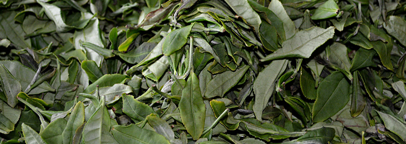

その当時、亀山で最も多く栽培されていた紅茶品種が「べにほまれ」です。「べにほまれ」は日本初（茶農林1号）の紅茶専用品種で、亀山産の「べにほまれ」紅茶は、『日本産紅茶としてはじめて海外の紅茶に追いついた』と評されるまぼろしの紅茶なのです。
昭和30年代には世界レベルの品質を武器に海外へも輸出され、国内の茶品評会では亀山市の川戸勉氏が全23回中11回で最高位（農林水産大臣賞）を受賞するなど、亀山産紅茶は日本紅茶のトップブランドの地位を築きました。
しかし、最盛期に茶園面積50ha、生産量97tを誇り、さらなる拡大を目指していた亀山の「べにほまれ」紅茶も、海外産地とのし烈な競争や紅茶の輸入自由化等、時代の流れの中で国内の他産地と同様に衰退していくこととなります。市内の紅茶茶園は続々と緑茶へと改植され、亀山の紅茶生産はほとんど消えてしまったのです。
この歴史に埋もれてしまった亀山産のべにほまれ紅茶を復活させようとする取り組みが、平成23年度から三重県中央農業改良普及センター、三重県農業研究所茶業研究室等の協力を得て、市内の茶業関係者によって行われています。
『亀山べにほまれ紅茶復活プロジェクト』として発足したこの取り組みでは、40年以上もの長い年月を経ながら奇跡的に残されていたべにほまれ茶園を再生させるとともに、高い紅茶製造の技術も再現し、再び世界に誇る亀山紅茶の復活を目ざしています。